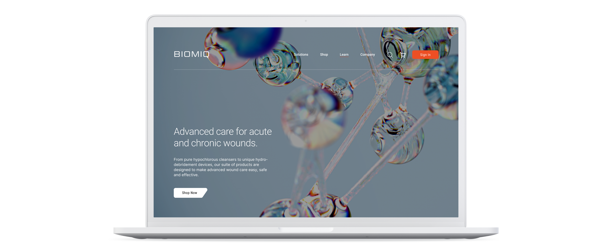

Biomiq
The Biomiq project is a comprehensive redesign and rebrand of Sterasure. The in-depth quantitative and qualitative research guided the UX principles and design of this project.
Try it yourself: https://biomiq.health/
From sterile to human: A rebrand with purpose
Sterasure faced a common but critical challenge... two websites. The main site, Sterasure.com, targeted consumers (B2C) while their sister site, BIHOCL.com, served B2B customers. This overlap caused confusion, diluted the Sterasure brand, and slowed conversions.
Our mission was clear. Unify, simplify, and humanize the brand experience. We aimed to create a digital experience that feels intuitive and approachable, drawing inspiration from biomimicry to design systems that are efficient and adaptive.
Role
Lead Product Designer
Led scrums, collaborated with cross-functional teams, facilitated workshops, mentored, and served as a lead for rebrand.
Full-Stack Product Design
Designed visuals, user experiences, prototypes, and motion. Crafted all design elements and design system. Conducted all research involved.
Cross-functional Collaboration
Partnered with teams of front-end developers, back-end developers, businesses, and stakeholders

The problem: 2 websites, 1 purpose
Our discovery phase revealed a fundamental mismatch:
The B2C website's content strategy focused on businesses, but its architecture and flows catered to consumers. The company also had a second website dedicated to only businesses, with some products appearing on both sites.
We needed to merge two separate worlds (B2B and B2C) into one cohesive experience.
Research as a foundation for design
All major design decisions were built on research insights
User Testing
20 participants (ages 18–40) shared frustrations with navigation and unclear product categorization.
Competitor Analysis
Brands like Apple and Microsoft inspired clear segmentation and navigation models.
A/B Testing
Which navigation option did participants want to use the most?
Accessibility Audits
Highlighted the need for larger fonts, contrast adjustments, and keyboard navigation improvements.
These insights shaped a new information architecture that cut friction, clarified hierarchy, and created distinct pathways for each audience without clutter.
Design philosophy
1
Humanized
Warmer tones, approachable visuals, empathetic messaging
2
Clear & Simple
Simplified navigation, consistent layouts, minimal cognitive load
3
Inclusive
WCAG-compliant accessibility and responsive performance across all devices
4
Timely
Test and iterate on cross-functional and vertical-supported UI and components using Figma and Atomic design principles
The solution: let's merge both websites
1. Interactive menu:
A/B Testing used to determine design
2. Homepage redesign:
Informational hierarchy experiment to uncover how to structure the page
3. Wound care redesign:
A/B Testing used to determine design
Design, test, design, test, design, test, until it's perfect
- Multiple rounds of usability testing and QA across browsers and devices
- Prototypes validated with real users before handoff
- Comprehensive documentation outlined component behavior, accessibility specs, and visual states
- Post-launch, analytics and heatmaps guided continuous optimization
The Results
Impact at a Glance
| Metric |
Post-Redesign Growth |
| Website Traffic |
+25–35% overall (+30% organic) |
| Session Duration |
+15–30% increase |
| Page Views per Session |
+20–30% increase |
| Conversion Rates |
+15–25% B2C / +20% B2B |
| Customer Satisfaction |
+25% CSAT / +15% NPS |
| Mobile Performance |
+25% more traffic / +20% conversions |
| Retention & Revenue |
+15% repeat visits / +20% revenue growth |
These numbers confirmed that great design doesn't just look good—it performs.
My reflection
Overall, I'm proud of how this project came together, it was validated quickly and delivered a beautiful, effective result.
It repositioned the company as a forward-thinking leader in healthcare, speaking to both professionals and patients with equal clarity, while increasing almost every metric on the board.